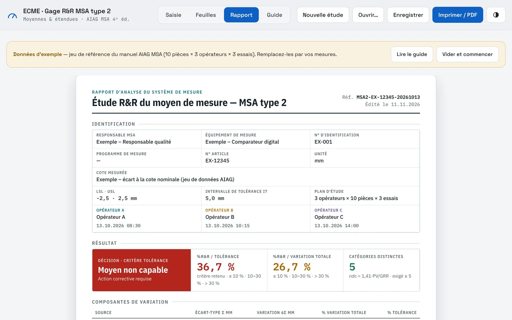
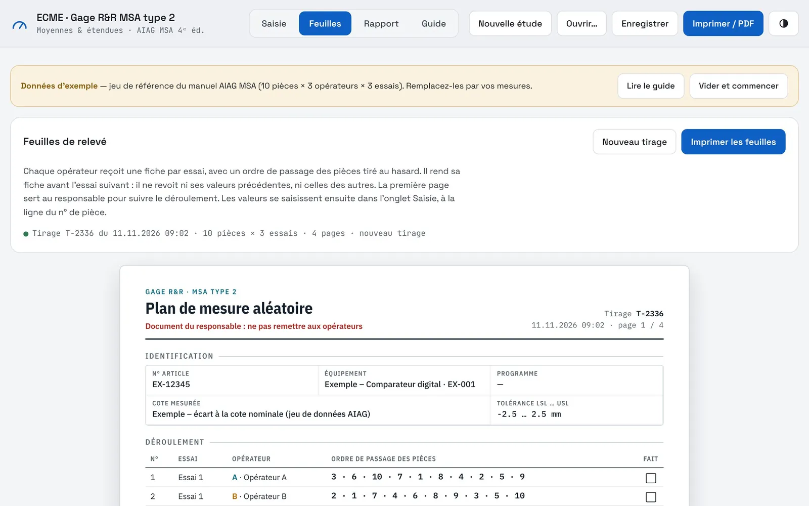
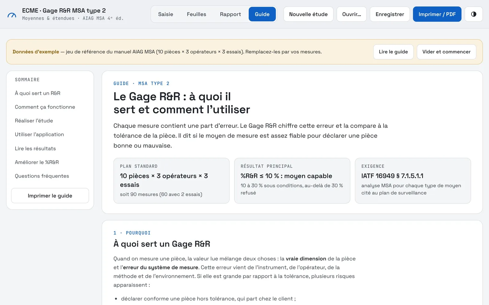

← Revenir aux applications
Système de mesure · Gage R&R
Savoir si l'on peut se fier à la mesure
Une étude R&R dit quelle part de la variation vient du moyen de mesure et des opérateurs. L'app guide la saisie, calcule le résultat en direct et explique comment le lire.
Le problème
Avant : une méthode mal comprise
Avant
- Une méthode peu connue en dehors de la qualité
- Des résultats difficiles à interpréter
- Un outil peu lisible
Maintenant
- Le verdict se met à jour pendant la saisie
- Des feuilles de relevé à ordre aléatoire, prêtes à imprimer
- Un guide intégré : à quoi sert l'étude, comment lire le résultat
- Un rapport propre à joindre au dossier
L'application
De la feuille de relevé au rapport
L'étude
Méthode des moyennes et étendues, selon le manuel AIAG MSA.
- 10 pièces, 3 opérateurs, 3 essais par défaut
- %R&R rapporté à la tolérance et à la variation totale
- Nombre de catégories distinctes (ndc)
- Décision : capable, sous conditions, non capable
- Jeu de données de référence pour vérifier le calcul
Autour de l'étude
Ce qui rend la méthode utilisable par tous.
- Feuilles de relevé avec ordre de passage tiré au hasard
- Rapport imprimable avec les composantes de variation
- Guide : but, réalisation, lecture des résultats
- Ouverture directe depuis la fiche d'un équipement ECME
- Thème clair ou sombre
Captures
L'application en images
Données d'exemple fictives.




Sous le capot
Simple à déployer, solide à l'usage
Un fichier HTMLS'ouvre dans Edge ou Chrome. Rien à installer, aucun serveur.
Moteur de calcul en C++Compilé en WebAssembly et intégré dans la page.
Calcul vérifiableLe jeu de référence du manuel AIAG redonne les valeurs attendues.
Études enregistrablesUne étude se sauvegarde et se rouvre plus tard.
Lié à ECMEL'équipement étudié vient du registre de métrologie.
Socle communMême thème que les autres applications.